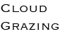

<!DOCTYPE html>
<html lang="en">
<head>
    <meta charset="UTF-8">
    <meta http-equiv="X-UA-Compatible" content="IE=edge">
    <meta name="viewport" content="width=device-width, initial-scale=1.0">
    <title>雲牧工作坊 - Cloud Grazing</title>
    <link rel="stylesheet" href="https://unpkg.com/swiper/swiper-bundle.css">  
    <link rel="stylesheet" href="https://unpkg.com/swiper/swiper-bundle.min.css">
    <link rel="stylesheet" href="./css/normalize.css">
    <link rel="stylesheet" href="./css/style.css">
    <script src="./js/jquery-3.6.0.min.js"></script>
    <script src="https://unpkg.com/swiper/swiper-bundle.js"> </script>  
    <script src="https://unpkg.com/swiper/swiper-bundle.min.js"> </script>

</head>
<body>
    <div class="hold"></div>
    <div id="header" class="header clearfix">
        <div class="nav">
            <div class="logo">
                <a href="./index.html">
                    
                </a>
            </div>
            <div class="nav-link">
                <a href="#top" >雲端牧場</a>
                <a href="#first">產品</a>
                <a href="#second">介紹</a>
                <a href="#third">招募</a>
                <a href="./#2">Contact</a>
            </div>
        </div>
    </div>
    <div id="mainBody">
        <a name="top"></a>
        <div class="swiper-slider-top">
            <div class="swiper-container">
                <div class="swiper-wrapper">
                    <div class="swiper-slide" style="background-image:url('./img/cloud_grazing_full.jpg')"></div>
                    <div class="swiper-slide" style="background-image:url('https://picsum.photos/1920/1080?random2')"></div>
                    <div class="swiper-slide" style="background-image:url('https://picsum.photos/1920/1080?random3')"></div>
                    <div class="swiper-slide" style="background-image:url('https://picsum.photos/1920/1080?random4')"></div>
                    <div class="swiper-slide" style="background-image:url('https://picsum.photos/1920/1080?random5')"></div>
                </div>
                <div  class="swiper-pagination"></div>
                <div class="swiper-button-next"></div>
                <div class="swiper-button-prev"></div>
                
            </div>
        </div>
        <a name="first"></a>
        <div class="swiper-list-first">
            <div class="content">
                <div class="title">
                    <span>產品類別</span> 
                </div>
            </div>
        </div>
        <a name="second"></a>
        <div class="article-second" name="#second">
            <div class="content">
                <div class="title">
                    <span>雲牧介紹</span> 
                </div>
                <div class="text-list">
                    <p>
                        【 雲 端 牧 場 】 - 是一個提供多樣雲端服務的商業媒合平台，
                        致力於創造接案者專注開發的環境，以及提供有效且快速解決方案。
                    </p>
                    <p>
                        【 雲 端 牧 場 】 - 提供穩定服務，牧場有多位牛牛職人提企業服務，
                        不會因為個人接案者有突發狀況，而無法提供後續的維運服務。且因目前牧場主人還是在職場服務，可因應需求尋找相關人才，
                        提供企業相關專業服務，也會於線上平台內尋找適合人選提供長期合作方案。
                    </p>
                </div>
            </div>
        </div>
        <a name="third"></a>
        <div class="article-third" name="#third">
            <div class="content">
                <div class="title">
                    <span>牛牛招募</span> 
                </div>
                <div class="text-list">
                    <p>
                        雲端牧場招募專業職人牛牛
                    </p>
                    <p>
                        【 雲 端 牧 場 】 -  未來合作會以專業平台，提供職人牛牛積分累積點數，以製作完成數量、品質、技術，
                        提供積分，積分用於後續接案合作評估考量。
    
                        
                        如何應徵： 牧場需要牛牛們，提供一份簡歷，當然也可以提供履歷（僅供參考），或是提供相關作品。
                        簡易面試： 面試採取視訊面試，會以職人牛牛專業，詢問相關問題。
                        投遞Email: cloud.grazing@gmail.com
                        
                        我們能為您提供什麼：
                            <p>1. 職人牛牛的工作我們來找。</p> 
                            <p>2. 牛牛產出的牛乳品質，會由專業職人牛牛鑑定，提供後續修改方案。</p>
                            <p>3. 企業合作需求，若有傳達錯誤，我們承擔。</p>
                            <p>4. 職人牛牛身體不舒服，無法如期產出，我們來幫你找人Cover。</p>
                            <p>5. 報價、企業產品Review、銷售產品金額回收，都由我們來處理，職人牛牛們就不需要全省跑透透。</p>
                    </p>
                </div>
            </div>
        </div>
        <div id="footer">Cloud Grazing</div>
    </div>
    <script src="./js/index.js"></script>
</body>
</html>